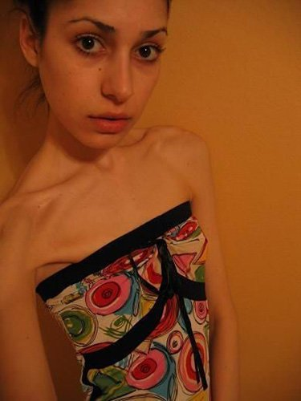

W pogoni za
idealnym wyglądem, porównywalnym do wyglądu modelki, wiele dziewcząt próbuje
drastycznie schudnąć. Dzisiaj stało się to prostsze niż kiedykolwiek - na rynku
produktów odchudzających pojawił się potężny spalacz tłuszczu - . Lekarze biją na alarm!

Wraz z pojawieniem się na polskim rynku spalacza tłuszczu "" znacznie częściej występują przypadki
szybkiej utraty masy ciała wśród populacji. W dążeniu do jak najszybszego
pozbycia się zbędnych kilogramów zaobserwowano krytyczne przekroczenie
maksymalnej dobowej dawki. Wynika to z faktu, iż osoby, które wypróbowały
nieefektywną zieloną kawę i inne dodatki, dające efekt podczas spożywania ich
dosłownie paczkami, popełniają ten sam błąd z .
Ten spalacz tłuszczu jest prawdziwym zabójcą komórek tłuszczowych w organizmie i
należy spożywać go ściśle według instrukcji. Niemniej ludzie, widząc jak już w
pierwszym tygodniu masa ciała się zmniejsza, zaczynają tracić kontrolę w pogoni
za rezultatem.
Wszystkie osoby odchudzające się z pomocą
zauważyły szybkie pozbycie się wagi, nawet do 10kg w ciągu tygodnia.
Niektórzy z nich, w ciągu miesiąca tracili 15-22kg! Jeśli na początku
było to dla nich powodem do radości to w późniejszym czasie zaczęło ich to
martwić. Osoby odchudzające się straciły kontrolę nad swoim odżywianiem –
specjalnie spożywały wysokokaloryczne produkty, ale nijak nie mogły przybrać
choć grama. Nawet po powrocie do normalnej diety kobiety nadal traciły na wadze,
zamiast na niej przybierać.
Przebadano tysiące osób, które zbyt szybko i zbyt dużo schudły z pomocą . Po spożyciu, nie zauważono żadnych
nietypowych objawów, takich jak nudności, wymioty lub osłabienie.
Niezależne laboratorium przeprowadziło badanie i wydało następującą opinię:
prowadzą do intesywnego spadku masy ciała i
pięciokrotnego przyspieszeniu metaolizmu! To właśnie dlatego kobiety na
całym świecie doceniły niezwykłą korzyść ,
pomocną przy odchudzaniu i przekraczają zalecane ich dawki spożycia!
Dlaczego chudniemy spożywając ?
1. Unikalne polisacharydy jagód przyspieszają metabolizm o 5 razy, co
przyczynia się do znacznego zmniejszenia liczby komórek tłuszczowych w
organizmie. W rezultacie, wszystkie tłuszcze z pożywienia są intensywnie spalane
bez jakiegokolwiek wysiłku fizycznego, przy czym pożądane pierwiastki śladowe
pozostają w organiźmie.
2. Goji zawierają beta-sitosterol – substancję spalającą szkodliwy
cholesterol w wątrobie. Właśnie ten szkodliwy cholesterol prowadzi do
otyłości.
3. Jagody stymulują wydzielanie hormonu wzrostu (hormonu "młodości") przez
przysadkę mózgową. To przyczynia się do poprawy stanu skóry, zapobiega
przedwczesnemu starzeniu się i poprawia jakość snu.
Dla optymalnej miesięcznej redukcji masy ciała (od 5-10kg), należy
codziennie zjadać 2-3 pastylki przed posiłkami. Najlepszy czas odchudzania z
pomocą to około dwa miesiące.
Ankieta, przeprowadzona wśród osób, które w krótkim okresie czasu dużo straciły
na wadze, potwierdziła, że wszystkie kobiety przekraczały zalecaną dawkę i
spożywały od 3 do 5 razy więcej pastylek! Zatem masa ciała zmniejszała się
znacznie szybciej – do 7-12kg w ciągu tygodnia. Widząc wynik wielu osobom było
trudno się zatrzymać – rezultat: szybka utrata kilogramów.
Instytut Żywienia ostrzega: zbyt szybka utrata masy ciała prowadzi do poważnych
problemów zdrowotnych!
Link na stronę certyfikowanego producenta
W porównaniu z zieloną kawą i innymi dodatkami stosowanymi w celu utraty wagi,
są prawdziwymi zabójcami tłuszczu
ze wskaźnikiem 97,8%. Niemniej jednak niesie to ze sobą ryzyko –
zbytnie poniesienie się procesowi i przekroczenie zalecanej dobowej dawki.
Pamiętaj: Twoja waga i rozmiary powinny zmniejszać się stopniowo i bez szkody
dla zdrowia. Zatem kiedy już zdecydowaliśmy się jeść , aby pozbyć się zbędnych kilogramów, należy
pamiętać, że dawka dzienna nie może przekraczać 3 pastylek - niezależnie od
wagi!
Zadbaj o swoje zdrowie!
Dziękuję TVN za tak dobrą i potrzebną transmisję! Lena, staram się nie
przegapić ani jednego odcinka! Odchudzające pastylki z już zamówiłam. Będę chudnąć!
Dziękuję!
W ciągu 3 miesięcy udało mi się zrzucić 22kg! Rozumiecie to? Ludzie mnie
teraz nie poznają i oczywiście musiałam zmienić całą swoją garderobę, co
zrobiłam z radością! Chudłam z pomocą ,
znajomy mi je polecił, gdy był w Pekinie. Polecam i Wam, zobaczcie moje
zdjęcia :)


KOMENTARZE
Świetny artykuł i jak zwykle najbardziej przydatne informacje! Dziękuję Lenie Marzec i całej jej załodze! Moja waga daleka jest teraz od ideału i już weszłam na stronę i zamówiłam ! Zaczynam chudnąć! Dziękuję raz jeszcze!
Słyszałam o tym produkcie, ale cały czas natykałam się na jakieś niesprawdzone strony... Jak dobrze, że Lena dała sprawdzony link, do mnie już zadzwonił operator i powiedział kiedy dotrze moja paczuszka z pastylkami! Jestem zadowolona! Wreszcie można powiecieć dietom "nie"!!! Dziękuję:
Ja już schudłam z pomocą , zamawiałam z tej strony za radą mojej przyjaciółki dietetyczki.
Moje rezultaty w ciągu 3 tygodni:
1 tydzień – minus 5,6kg
2 tydzień – minus 9,5kg
3 tydzień – minus 11,5kg.
Moje zdjęcia poniżej
Przyjmuję tabletki już drugi tydzień i co mogę powiedzieć: chudnę! Moje wymiary się zmniejszają, co jest wielkim plusem. Narazie nie będę umieszczała swoich zdjęć, chcę ostatecznie osiągnąć swój cel. jem 3 razy dziennie do posiłków
Ten bio-produkt poradziła mi 3 miesiące temu mój lekarz dietetyk. Zaczęłam więc jeść pastylki w każdy ranek i wieczór. Schudłam 20kg! Sami zobaczcie :) Jestem bardzo zadowolona i polecam każdemu, kto chce schudnąć – odchudzajcie się tylko z ! Jest to bardzo pomocny i szybki sposób!!
Naprawdę?! WOW... już sobie zamówiłam.. moja waga teraz to 85kg przy wzroście 163cm... ogólnie będę chudnąć i szukać męża... mam dość bycia samotną :(
Próbowałam chudnąć z pomocą wielu diet, ale nie traciłam wagi, ogólnie same nerwy. Oczywiście słyszałam o jagodach Goji.. ale nie miałam do nich zaufania... dobrze, że Lena o nich opowiedziała i teraz śmiało można próbować, przecież dobrym radom można ufać :) Dziękuję bardzo! Mam nadzieję, że teraz wszystko mi się ułoży!!
Z pomocą pastylek schudłam 12kg. Po prostu jadłam je zgodnie z instrukcją, a zamawiałam na tej stronie Waga stoi w miejscu i się nie zwiększa, no i cellulit zniknął. Super produkt dla odchudzania! Polecam wszystkim kto nijak nie może znaleźć dla siebie niczego odpowiedniego i schudnąć!